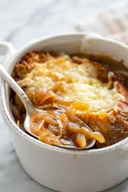

Home
French Onion Soup

Description
French onion soup is a classic dish that is easy to make and enjoy on any occassion.
Ingredients
- 4 cups of yellow onions
- sherry
- 8 cups beef broth
- french bread
- swiss cheese
Steps
- Slice onions and saute in butter
- combine onions, beef broth and sherry
- place bread on top of soup
- place swiss cheese on top of bread
- broil until golden brown
- Enjoy!